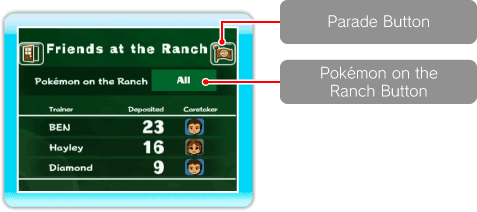
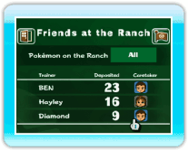
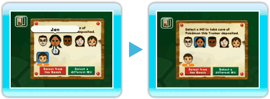
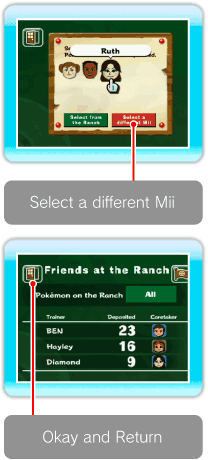
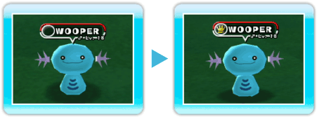
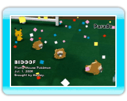

|
17
|
Deposit Details
|
 |
|
You can check Pokémon on the Ranch, see Mii info, and view the Pokémon Parade. You can also change the selection of Pokémon you want
to bring to the Ranch by pointing at the Pokémon on the Ranch
Button and pressing  What Is a Pokémon
Caretaker?
It's a Mii who takes care of Pokémon brought to the Ranch by a Trainer. When you set up a Caretaker, the assigned Caretaker and Pokémon will be friendly to each other. Change the Caretaker of Pokémon
On the Deposit Details screen, point at the Mii you want to
change and press
When the Setup-Caretaker screen is displayed, point at the
Mii that you want to change and press 
If you want
to select a different Mii that you have on the Setup-Caretaker
screen, point at "Select a different Mii" and press Once setup is complete, point at "Okay and Return" and press
When you erase a Mii on the Mii Channel, that Mii will disappear from the Ranch, and a new Mii will be automatically assigned as a Caretaker. Add a Pokémon to Favorites
This feature becomes available when you bring a certain
number of Pokémon to the Ranch. Once you add Pokémon
to Favorites, you have the option of bringing only those
Pokémon to the Ranch. To add to Favorites, point at  Parade
When you point at the Go to a Parade Button and press |
 . You can change selection to "All," "Trainer," or
"Favorites."
. You can change selection to "All," "Trainer," or
"Favorites." below its face is a Mii who is already
assigned as a Caretaker on the Ranch.
below its face is a Mii who is already
assigned as a Caretaker on the Ranch. next to
the Pokémon Name and press
next to
the Pokémon Name and press  |
 |
 |